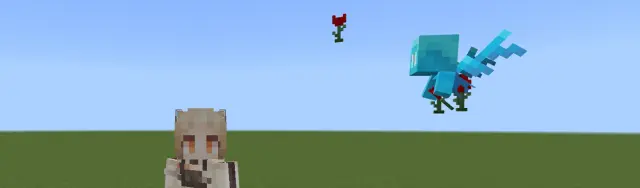
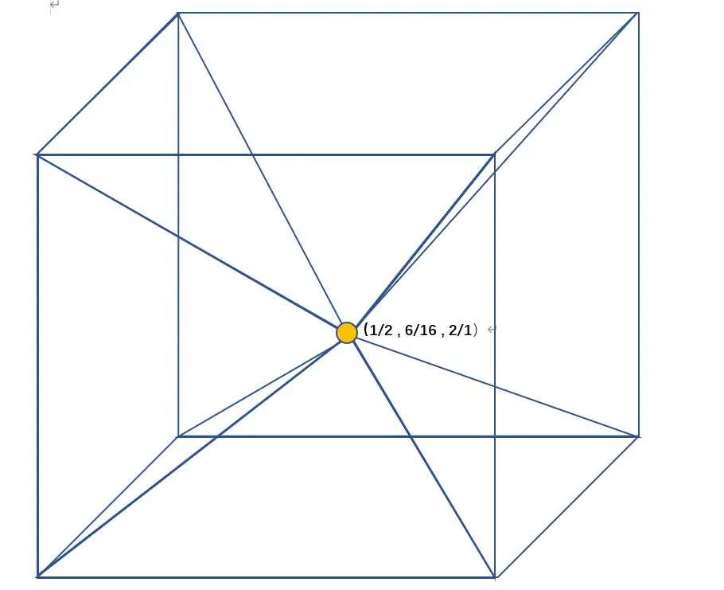

MCBE 关于掉落物的简单研究 ep.2 由挤压简述掉落物运动
写在前面（感谢）
本章借助了 @hhhxiao_ 的trapdoor插件完成了掉落物精确坐标的采集。数据均采集自1.16.40服务器
 [MCBE] 1.16~1.18服务插件Trapdoor介绍与教程
B 站视频 »
[MCBE] 1.16~1.18服务插件Trapdoor介绍与教程
B 站视频 »
由于大部分数据仅为测试结果，并没有源码支持，所以仅供参考
本章2.2部分大量参考了 q43776343 和 @什么都不会的苟鑫森 等rct大佬完成的《红石炮资料库3.5期》
感谢 @Maple_枫溪 为本文提供的部分思路以及配图
由于本文大部分数据来自于五月中旬的测试且没有经过整理，部分思路与结论可能有误，欢迎指正
2.1、挤压
2.1.1、什么是挤压
掉落物实体在方块碰撞箱内会受到挤压效果，具体表现为尝试将掉落物实体推离方块自身的碰撞箱
这里的碰撞箱指的是掉落物会受到挤压的范围，常见的碰撞箱为方块内部
2.1.2、挤压的两种方块
挤压对于方块判定的严苛程度可以分为两种，从轻到严分别是挤压外围方块、挤压中心方块
挤压外围方块允许半砖等较小的不完整方块。当挤压外围方块围住挤压中心方块时，掉落物将尝试向上浮动
挤压中心方块允许末地传送门框架等高度大于0.75b（即方块缺失高度小于掉落物高度）的较大的不完整方块
当掉落物被挤压中心方块包裹时，且所有挤压中心方块的四个方向都被包裹时，掉落物则能被向上挤压
如果挤压中心方块没有被包裹时，其挤压方向参考图片1.1及2.1.4小节的描述
2.1.3、挤压对掉落物产生什么效果
当掉落物的中心位于方块内部时，挤压会持续消除掉落物的所有速度。同时挤压会对掉落物赋予一个固定的速度。侧向挤压掉落物会在1gt内让掉落物拥有0.25b/gt的速度并保持这个速度，直至掉落物的中心完全离开方块
同理，竖向挤压则会赋予0.21b/gt的速度并保持。这里之所以会产生与侧向挤压不同的效果将在2.2.4说明
特别的，当掉落物中心不位于方块内部时，物品将受到下方方块的阻力，且不会持续清除掉落物速度。掉落物只会在刚接触碰撞箱的时候被清除速度且赋予0.25b/gt的速度
2.1.4、挤压的优先级
当掉落物位于图中所标注的锥体时，会被挤压向锥体所拥有的方块外表面

中心点处会固定向东（x+）处挤压
当存在某个方向上被挤压外围方块阻挡时，对应锥体和共用中心点的掉落物会按照 下（y-）—西（x-）—东（x+）—北（z+）—南（z-）—上（y+）的顺序依次顺延
---------------------
2.2、掉落物的运动
在mc中的运动并没有加速度的概念，实体运动遵守
当前坐标 = 上一gt速度 + 速度 公式 2.0
2.2.1、掉落物的横向运动
掉落物横向运动时，不考虑水流等额外加速，其速度遵守以下公式：
当前速度 = 阻力系数 * 上一gt速度 公式 2.1
显而易见的，当阻力系数越接近1时，其产生的阻力越小
以下阻力均为该方块上表面阻力系数
空气的阻力系数为0.98
蓝冰阻力系数约为0.97
浮冰和冰的阻力系数约为0.96
普通方块的阻力系数约为0.6
粘液块的阻力系数约为0.3
蜜块的阻力系数小于0.25
当掉落物位于不完整方块上时，掉落物会受到不完整方块下侧方块的阻力影响
特别的，当利用下半砖等不完整方块将粘液块或蜜块与掉落物隔离时，其受到的阻力系数约为0.75
当利用下半砖等不完整方块将空气与掉落物隔离时，其受到的阻力系数约为0.6
当掉落物从方块边缘落下时，掉落物会失去约0.098b/gt的速度。若掉落物此时没有约0.098b/gt的速度，将会停止在方块边缘
2.2.2、掉落物的纵向运动
当掉落物纵向运动时，不考虑水流等额外加速，其速度遵守以下公式：
当前速度 = 阻力系数 *（上一gt速度 + 重力加速度） 公式 2.2
（mc不存在加速度概念，这里考虑到便于理解，采用了“重力加速度”这个名称）
空气的阻力系数为0.98
重力加速度为0.04b/gt
显而易见的，当横向运动出现其他力时，公式2.1也将变化成公式2.2的类似形式当前速度 = 阻力系数 * （上一gt速度 + 速度变化值） 公式 2.3
2.2.3、一些常见的速度
粘液块弹射速度1b/gt
活塞推动速度0.5b/gt
挤压速度0.25b/gt
*2.2.4、竖直方向上的挤压运动
在参考公式2.2的情况下，我们将阻力系数1、上一gt速度0.25b/gt、重力加速度0.04b/gt带入公式，很容易得到当前速度为0.21b/gt这一结论
且由于当掉落物受到挤压时会将掉落物速度清除，下1gt又一次将0.25b/gt赋予掉落物，于是掉落物将一直保持0.21b/gt的速度持续上升
写在最后（作者的碎碎念）
在之前群友问了关于炼药台的一个问题后，我觉得应该更新掉落物专栏了
本来以为可以把之前的掉落物数据打包成大杂烩发出来就行了，结果发现居然在这之前更了一期（没错我已经忘干净了）那就没办法更大杂烩了。按照之前的文章思路进行数据整理和补充后，和群友讨论了一些靠谱的模型放在了这篇专栏里